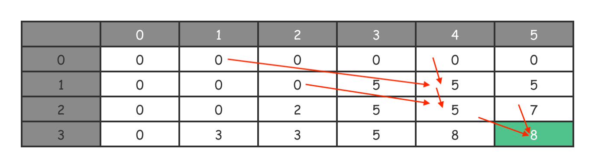

- 00 导读 动态规划问题纷繁复杂，如何系统学习和掌握它？.md.html
- 00 开篇词 为什么大厂都爱考动态规划？.md.html
- 01 硬币找零问题：从贪心算法说起.md.html
- 02 暴力递归：当贪心失效了怎么办？.md.html
- 03 备忘录：如何避免递归中的重复计算？.md.html
- 04 动态规划：完美解决硬币找零.md.html
- 05 面试即正义第一期：什么样的问题应该使用动态规划？.md.html
- 06 0-1背包：动态规划的Hello World.md.html
- 07 完全背包：深入理解背包问题.md.html
- 08 子数组问题：从解决动归问题套路到实践解题思路.md.html
- 09 子序列问题：详解重要的一大类动态规划问题.md.html
- 10 面试即正义第二期：常见的动态规划面试题串烧.md.html
- 11 动态规划新问题1：攻破最长递增子序列问题.md.html
- 12 动态规划新问题2：攻破最大子数组问题.md.html
- 13 动态规划算法设计的关键：最优子结构与状态依赖.md.html
- 14 面试即正义第三期：刷题指南，熟能生巧.md.html
- 15 课程回顾与总结（上）.md.html
- 16 课程回顾与总结（下）.md.html
- 加餐 买卖股票：常见且必考的动态规划面试题.md.html
- 结束语 在我家的后院养长颈鹿.md.html
- 捐赠
06 0-1背包：动态规划的Hello World
你好，我是卢誉声。从今天开始，我们正式进入动态规划套路模块。
不知道你是否跟我有过相似的经历，那就是提起动态规划，最先想到的就是背包问题。事实上，背包问题分很多种，大多数人首先遇到的一般是背包中的0-1背包问题。
因此，我把这个问题称作 Hello World，这跟我们学习一门新的编程语言十分相似。它很经典，又极具代表性，能很好地展示动态规划思想，对于你掌握动态规划面试题来说，也十分有帮助。
在“初识动态规划”模块中，相信你已经对动态规划问题有了一个比较全面的认识和了解。今天，就让我们用一用前面所学的解题思路，其实就是把总结出来的套路，套用在0-1背包问题上，看看能不能解决这道题。
那在开始前呢，我还是先提出一个简单的问题，那就是：为什么将它称作0-1背包问题，0-1代表什么？你不妨带着这个小问题，来学习今天的内容。
0-1 背包问题
我们先来看看0-1背包问题的描述。
问题：给你一个可放总重量为 \(W\) 的背包和 \(N\) 个物品，对每个物品，有重量 \(w\) 和价值 \(v\) 两个属性，那么第 \(i\) 个物品的重量为 \(w\[i\]\)，价值为 \(v\[i\]\)。现在让你用这个背包装物品，问最多能装的价值是多少？
示例：
示例：
输入：W = 5, N = 3
w = [3, 2, 1], v = [5, 2, 3]
输出：8
解释：选择 i=0 和 i=2 这两件物品装进背包。它们的总重量 4 小于 W，同时可以获得最大价值 8。
算法问题分析
这个问题的描述和示例都比较简单，而且容易理解。当遇到这样一个问题时，你该从哪里下手呢？
如果你是一个动态规划老手，当然就能一眼看出这是个动态规划问题。但如果你是第一次接触，也不用担心，接下来我就带着你判断一下。
按照我之前给你说过的思路，先看问题是怎么问的：“最多能装的价值的多少？”注意这里有一个“最”字，遇到这种问题我们应该最先想到什么呢？没错，贪心算法。那么贪心算法的局部最优能解决我们的问题吗？
事实上不太能，因为如果按照贪心算法来解的话，我们很难得到整体最优解。举个简单的例子，按照示例给出的输入，如果我们先选择 \(i=0\) 和 \( i=1\) 的物品，那么总重量正好是\(W=5\)，但这不是最优解，因为总价值才 \(7\)。因此，为了获得整体最优解，我们该怎么办呢？显然就是穷举。
在后续的课程中，我会与你分享更多面试实战题目。届时你就会发现，当问题复杂到一定程度后，穷举真的不是一件容易的事。因此，我们优先考虑使用动态规划来解决这个问题。那么该问题满足动态规划的特征吗？我在这列举出来，你对照看一下：
- 重叠子问题：对于0-1背包问题来说，即便我们不画出求解树，也能很容易看出在穷举的过程中存在重复计算的问题。这是因为各种排列组合间肯定存在重叠子问题的情况；
- 无后效性：当我们选定了一个物品后，它的重量与价值就随即确定了，后续选择的物品不会对当前这个选择产生副作用。因此，该问题无后效性；
- 最优子结构：当我们选定了一个物品后，继续做决策时，我们是可以使用之前计算的重量和价值的，也就是说后续的计算可以通过前面的状态推导出来。因此，该问题存在最优子结构。
写出状态转移方程
现在，我们确定了这是一个动态规划问题。接下来，让我们一起看看如何写出动态规划算法的核心，即状态转移方程。还记得之前总结的动态规划求解框架（或者说套路）吗？
首先，我们先来确定初始化状态。任何穷举算法（包括递归在内）都需要一个终止条件，这个所谓的终止条件，就是我们在动态规划解法当中的最初子问题，因此我们将其称作初始化状态。
在0-1背包中，这个终止条件是什么呢？显然，当背包的容量为 0 或者物品的数量为 0 时要终止执行。如果体现在代码上，就是当物品总数为 0 时重量为 0；而重量为 0 时显然物品数量也为 0。
接着，在什么情况下，会导致计算过程中不断逼近上面提到的初始化状态呢？其实题目中已经给出了答案。我们从背包的角度看待这个问题，将物品放入背包时：
- 背包内物品的数量 \(N\) 在增加，它是一个变量；
- 同时，背包还能装下的重量 \(W\) 在减少，它也是一个变量。
因此，当前背包内的物品数量 \(N\) 和背包还能装下的重量 \(W\) 就是这个动态规划问题的状态参数。
然后，我们再来看如何进行决策。在0-1背包问题中，我们的决策无非就是该不该把当前这个物品放入背包中：如果将该物品放入背包，子问题的答案是多少；如果没有放入，子问题的答案又是多少。
我们曾说过，通常情况下，状态转移方程的参数就是状态转移过程中的变量，即状态参数。而函数的返回值就是答案，在这里就是最大价值。因此，我们从上面两种决策情况中取最优解，即 max (放入该物品, 不放入该物品)。
在确定了初始化状态、状态参数和决策后，我们就可以开始尝试写状态转移方程了。由于这是我们第一次正式面对动归问题，我会先把递归形式的状态转移过程描述出来，代码如下：
/*
* tn: traversed n，即已经遍历过的物品；
* rw: reserved w，即背包还能容量的重量。
*/
DP(int tn, int rw) {
// 当遍历完所有物品时，就该返回 0 了，因为没有物品也就没有价值了
if tn < 0
return 0
// 当背包还能容纳的重量已经小于当前物品的重量时，显然这个物品不能放入背包
if rw < w[tn]
return DP(tn - 1, rw)
// 作出决策，该不该放入物品：
// 1. 放入：那么价值是 DP(tn - 1, rw - w[tn])；
// 2. 不放入：那么价值是 DP(tn - 1, rw)。
return max(DP(tn - 1, rw), DP(tn - 1, rw - w[tn]) + v[tn])
}
顺着这个思路，我把状态转移方程给写出来，它是这样的：
\[DP(tn, rw)=\\left\\{\\begin{array}{c}- 0, tn<=0\\\\\\- 0, rw<=0\\\\\\- DP(tn-1,rw), rw<w\[tn\]\\\\\\- max(DP(tn-1,rw), DP(tn-1,rw-w\[tn\])+v\[tn\])),rw>=w\[tn\]- \\end{array}\\right.\]
现在，我们有了针对0-1背包问题的完整状态转移方程，可以开始编写代码了。
编写代码进行求解
但在编写代码前，还有一个小问题需要解决，就是我们需要为动态规划代码准备一个备忘录，来存储计算过的子问题答案。那么这个备忘录的数据结构应该是什么样的呢？
从前面的分析可以看出，状态转移方程中有两个状态参数，并通过这两个状态参数确定了一个子问题的答案。因此，我们可以使用一个二维数组作为备忘录。
为了通用起见，我将其命名为\(DP\[tn\]\[rw\]\)，其中行代表的是 \(tn\)，表示第几个物品；列代表的是\(rw\)，表示背包还能容纳的重量。这个索引组合（比如\(DP\[2\]\[3\]\)）对应位置的值，就是这个子问题的答案，表示当背包还能容纳 3 的重量时，放入前 2 件物品的最大价值。
所有先决条件都解决了，现在来看一下如何用标准的动归解法来求解此问题，我直接给出代码。
Java 实现：
int dp(int[] w, int[] v, int N, int W) {
// 创建备忘录
int[][] dp = new int[N+1][W+1];
// 初始化状态
for (int i = 0; i < N + 1; i++) { dp[i][0] = 0; }
for (int j = 0; j < W + 1; j++) { dp[0][j] = 0; }
for (int tn = 1; tn < N + 1; tn++) { // 遍历每一件物品
for (int rw = 1; rw < W + 1; rw++) { // 背包容量有多大就还要计算多少次
if (rw < w[tn]) {
// 当背包容量小于第tn件物品重量时，只能放入前tn-1件
dp[tn][rw] = dp[tn-1][rw];
} else {
// 当背包容量还大于第tn件物品重量时，进一步作出决策
dp[tn][rw] = Math.max(dp[tn-1][rw], dp[tn-1][rw-w[tn]] + v[tn]);
}
}
}
return dp[N][W];
}
int solveDP() {
int N = 3, W = 5; // 物品的总数，背包能容纳的总重量
int[] w = {0, 3, 2, 1}; // 物品的重量
int[] v = {0, 5, 2, 3}; // 物品的价值
return dp(w, v, N, W); // 输出答案
}
C++ 实现：
int DP(const std::vector<int>& w, const std::vector<int>& v, int N, int W) {
int dp[N+1][W+1]; memset(dp, 0, sizeof(dp)); // 创建备忘录
// 初始化状态
for (int i = 0; i < N + 1; i++) { dp[i][0] = 0; }
for (int j = 0; j < W + 1; j++) { dp[0][j] = 0; }
for (int tn = 1; tn < N + 1; tn++) { // 遍历每一件物品
for (int rw = 1; rw < W + 1; rw++) { // 背包容量有多大就还要计算多少次
if (rw < w[tn]) {
// 当背包容量小于第tn件物品重量时，只能放入前tn-1件
dp[tn][rw] = dp[tn-1][rw];
} else {
// 当背包容量还大于第tn件物品重量时，进一步作出决策
dp[tn][rw] = max(dp[tn-1][rw], dp[tn-1][rw-w[tn]] + v[tn]);
}
}
}
return dp[N][W];
}
int DPSol() {
int N = 3, W = 5; // 物品的总数，背包能容纳的总重量
std::vector<int> w = {0, 3, 2, 1}; // 物品的重量
std::vector<int> v = {0, 5, 2, 3}; // 物品的价值
return DP(w, v, N, W); // 输出答案
}
我们几乎照搬了状态转移方程描述的内容到代码里，因此这段代码通俗易懂。
首先，我们定义了两个数组，其中 \(w\) 用来表示物品的重量，而 \(v\) 用来表示物品的价值。这里需要注意的是，每个数组的第 0 项都是 0。由于小于 0 的值对应的都应该是 0，因此我们可以通过这个方法来省去冗余的 if 判断逻辑。
我们已经定义了备忘录即 \(DP\[tn\]\[rw\]\) 数组的含义：当背包还能装 \(rw\) 重量的物品，放入了前 \(tn\) 件物品时的最大价值。接下来，我们再依据状态转移方程的定义来初始化状态：
- 创建一个大小为 N+1 / W+1 的二维数组，并将所有位置初始化为0；
- 初始化状态，即前面提到的穷举的终止条件，把所有的 \(dp\[0\]\[i\]\) 和 \(dp\[j\]\[0\]\) 全部都设置为 0。
接着，进入编写函数主体循环的阶段，让我们看看每一次循环中是如何做决策的：
- 主循环分为两层，第 1 层遍历所有物品，也就是尝试放入每个物品；第 2 层遍历背包容量，也就是假定当前背包容量是 \(rw\) 的时候，求在背包容量为\(rw\)时，放入当前物品的最大价值；
- 如果背包容量小于当前物品价值，那么这个时候最大价值也就是当前容量不变，使用上一个物品的最大价值即可；
- 如果背包容量大于当前物品价值，那么这个时候最大价值也就是从以下两个决策中挑选：
a. 放入这个物品前的最大价值 + 当前物品价值和作为答案；- b. 不放入这个物品时，当前容量的最大价值作为答案。
我在下面的表格中，用箭头画出了容量为 5 时的求解路径。你可以参照这个求解路径来加深对代码的理解。

在面试过程中，如果能养成对编写代码重审的习惯，也是可以加分的。因此，在我们实现完决策逻辑后，再对代码做些基本的检查，就可以“交卷”了。
0-1 背包问题的延伸
事实上，由于0-1背包问题过于经典，在真正的算法面试环节，如果涉及动态规划问题时，基本不会让你直接解决这个问题，而是让你解决这个问题的变种。
因此，我们有必要对0-1背包问题做一个延伸，来看看如何把一个看似陌生的动态规划问题转化成0-1背包问题来进行求解。
算法问题分析
我们先来看看问题的描述。
问题：有一堆石头，每块石头的重量都是正整数。每次从中选出任意两块石头，然后将它们一起粉碎。假设石头的重量分别为 \(x\) 和 \(y\)，且 \(x ≤ y\)。那么粉碎的可能结果如下：
- 如果 \(x\) 与 \(y\) 相等，那么两块石头都会被完全粉碎；
- 否则，重量为 \(x\) 的石头将会完全粉碎，而重量为 \(y\) 的石头的新重量为 \(y - x\)。
最后，最多只会剩下一块石头。返回此时石头最小的可能重量。如果没有石头剩下，就返回 0。
示例：
示例：
输入：[1, 2, 1, 7, 9, 4]
输出：
解释：Round 1: (2, 4) -> 2, 数组变成 [1, 1, 7, 9, 2]
Round 2: (7, 9) -> 2, 数组变成 [1, 1, 2, 2]
Round 3: (2, 2) -> 0, 数组变成 [1, 1]
Round 4: (1, 1) -> 0, 数组为空，返回 0
如果你是第一次遇见这个问题，那么你很可能跟绝大多数人（包括我在内）一样一脸茫然，一上来就没有什么思路。这其实很正常，事实上动态规划的面试题有规可循，总共就那么几种，见过了，以后就知道了。
我们先来读一下题目，最后的问题中包含了“最”字，这时你就应该小心了。同时，这个题目显然需要通过排列组合的方式从所有可能组合中找到最优解，因此会涉及穷举，如果涉及穷举，就很有可能涉及重叠子问题。
我刚才在0-1背包中使用了一个模版化的分析方法，我建议你在这里对此问题进行类似的分析。分析后你就会发现，这应该是一个动态规划问题。
转化成动态规划问题
现在，我们就来讲一下到底如何将其转化为动态规划问题。
首先，请你观察一下上面提供的示例。在示例中，第一步组合 2 和 4，求出 (4 - 2) = 2；第二步组合 7 和 9，求出 (9 - 7) = 2；第三步组合 2 和 2，求出 (2 - 2) = 0；最后第四步组合 1 和 1，同样得 0。我们把这个过程组合成一个式子，它看起来是这样的：
\[1-(1-((4-2)-(9-7)))\]
如果解开这些括号，就可以得到 1 - 4 + 2 + 9 - 7 - 1。再做一下简单的变换，就可以得到如下式子：
\[1 + 2 + 9 - 1 - 4 - 7\]
这个时候，我们可以把这个公式分成两组，一组是从数组中挑选出几个数字相加；然后，将另外几个数字相减，求两个数字的差。最后确保这个差最小。
从直觉上来说，如何确保两组数字之差最小呢？
我们可以看到如果一组数字接近所有数字之和的 1/2，那么两组数字之差肯定越小，比如上面的示例中所有数字之和是 24，所以一组数字是 12，另一组数字也是 12，最后肯定能得到最小值0。
现在，假设有一个背包，背包的容量是 12（24/2）。接着，我们有一堆的物品，重量分别是 [1, 2, 1, 7, 9, 4]，注意我们设它的价值与重量相同。现在我们希望选出的物品放到背包里的价值最大，这样一来，我们就可以把这个题目转化成0-1背包问题了。
写出状态转移方程
那么，动态规划部分的状态转移方程就和0-1背包问题中的一样，如下所示：
\[DP(tn, rw)=\\left\\{\\begin{array}{c}- 0, tn<=0\\\\\\- 0, rw<=0\\\\\\- DP(tn-1,rw), rw<w\[tn\]\\\\\\- max=(DP(tn-1,rw), DP(tn-1,rw-w\[tn\])+v\[tn\])),rw>=w\[tn\]- \\end{array}\\right.\]
看到了吧！我们巧妙地把这个看似让人蒙圈的问题成功转化成了一个标准的0-1背包问题，而且能够直接复用我们所学的内容。
万事俱备后就是编写代码，由于状态转移方程与0-1背包问题如出一辙，因此我们这里就省略编码这一环节了。
通用的动态规划
在上一个模块“初识动态规划”中，我们曾经介绍了一种经过经验总结的动态规划解题框架（或者说是套路）。其实当时，我并未给出比较严格的框架，作为补充完善动态规划理论的重要一环，我们很有必要学习、掌握通用的动态规划的框架。
我们已经知道，一个动态规划问题是指它可以从大问题中找到无后效性的重叠子问题。所谓无后效行是指，其子问题不会双向依赖，只会单向依赖。否则，我们就无法确保子问题处理后，更大的问题一定能取到子问题的解。
现在，我们准备对动态规划问题进行泛化统一建模，如果用数学语言描述就如下公式所示：
\[f(x)=\\left\\{\\begin{array}{c}- d(x), x \\in V\_{I}\\\\\\- g(\\{v(f(s(x,c)),c)\\}),c \\in values(x)- \\end{array}\\right.\]
我们该怎么理解这个公式呢？首先，我们需要考虑一些边界情况，如果输入向量 \(x\)，那么在边界组合 \(V\_{I}\) 中，用一个边界函数 \(d(x)\) 直接返回 \(f(x)\) 的值，就不需要再划分子问题了。比如在0-1背包问题中，当 \(tn\) 或 \(rw\) 小于等于 0 时，这个值就是 0。
否则，说明这是一个可以划分子问题的问题，那么我们就需要从可选组合 \(values\) 中取出用于划分子问题的备选值。需要牢记的是，在复杂问题中这个 \(values\) 可能不是一个一成不变的组合，它会随着当前状态 \(x\) 变化而变化。
接着，我们对每一个备选值 \(c\)（与上面的 \(x\) 类似，同样可能是一个向量），通过函数 \(s(x, c)\) 求得当前备选值的子问题的 \(x\), \(c\)。然后，通过 \(f(s(x, c))\) 得到这个子问题的结果。
再接着，我们通过子问题 \(v(f(s(x, c)), c)\) 的结果和当前备选值 \(c\)，来求得当前问题的解。因为我们有一系列的备选值 \(c\)，因此会得到一个当前问题的求解集合。
最后，我们通过最优化函数 \(g(t)\) 进行求解。比如原问题是求最小值，那么 \(g(t)\) 就是 \(min(t)\)；如果是求最大值，那么就是 \(max(t)\)。这两种是最为常见的函数，我们在前面的例题当中也都见过了。
这样一来，我们就可以把所有的问题都套入这个框架，写出对应的状态转移方程了。
课程总结
现在让我们回到这节课开头提出的那个问题，那就是0-1背包问题中的 0 和 1 代表的到底是什么呢？
其实，你可以看到在整个算法计算过程中，每次我们只能做两种选择：
- 放入当前物品；
- 不放入当前物品。
如果我们对这个问题稍作修改：每个物品有一定的数量（注意不止一个），同时还允许在背包中反复放入多个相同的物品，那么这个问题就变成了每个物品应该放几个。
我们可以看到0-1背包就是这种问题的一个子集，相当于每个物品都只有 1 个的背包问题！如果从放入数量的角度来看，放入当前物品就相当于当前的物品放入了 1 个，不放入当前物品就相当于放入了 0 个。
所以，这就是为什么这个背包问题被称为0-1背包的根本原因。
充分理解0-1背包的解题思路，对全面掌握背包问题来说至关重要。我会在下一节课为你讲解泛化的背包问题，并给出衍生的面试问题讨论，帮助你攻破背包问题难关。
课后思考
在这节课中，我们介绍了0-1背包问题的延伸，提出了一个“粉碎石头”的问题。现在，请你按照求解0-1背包问题的思路，全面分析一下这个问题，然后写出求解的代码。
不知道你今天的收获如何呢？如果感觉已经掌握了解题思路，不妨也去考考你们的同事或者朋友吧，刚好也有机会复述一遍今天所学。
© 2019 - 2023 Liangliang Lee. Powered by gin and hexo-theme-book.